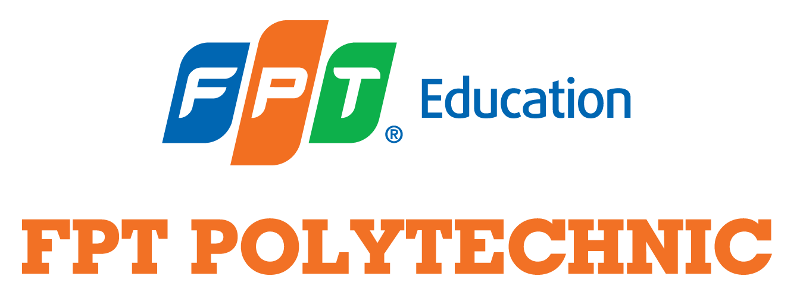

XÂY DỰNG TRANG WEB
 Website hỗ trợ đắc lực cho doanh nghiệp trong việc quảng bá sản phẩm, dịch vụ hay thương hiệu. Mỗi đối tượng khác nhau sẽ có những yêu cầu riêng cho web của mình. Nếu là kinh doanh sẽ cần cầu kỳ vì web chính là cửa hàng cung cấp sản phẩm, dịch vụ và để khẳng định thương hiệu.
Website hỗ trợ đắc lực cho doanh nghiệp trong việc quảng bá sản phẩm, dịch vụ hay thương hiệu. Mỗi đối tượng khác nhau sẽ có những yêu cầu riêng cho web của mình. Nếu là kinh doanh sẽ cần cầu kỳ vì web chính là cửa hàng cung cấp sản phẩm, dịch vụ và để khẳng định thương hiệu.
Đối với các cơ quan, tổ chức, web chủ yếu nhằm mục đích cung cấp thông tin. Nhu cầu web ngày càng cao đồng nghĩa với cơ hội việc làm sau khi tham gia các lớp học về web luôn rộng mở.Mục tiêu khóa học thiết kế giao diện web của FPT Arena không phải là đào tạo các chuyên gia lý thuyết mà là các chuyên gia thực hành. Bên cạnh đó, học viên của trường còn được trang bị đầy đủ kỹ năng mềm và ngoại ngữ để đi làm ngay và tự tin ứng tuyển vào những công ty, doanh nghiệp nổi tiếng. Học viên được trang bị hệ thống lý thuyết, phương pháp luận, nguyên tắc, kỹ năng sử dụng phần mềm, được rèn luyện tư duy và phẩm chất nghề nghiệp,… để có thể xây dựng các sản phẩm mỹ thuật đa phương tiện ấn tượng nhất. Trọng tâm của khóa học là các bài thực hành. Học viên sẽ được thực hành thuần thục từng công cụ và trưởng thành qua từng dự án thực tế. Bởi lẽ, đó là những dự án đòi hỏi có sự kết hợp hài hòa giữa kiến thức và kỹ năng đã được trang bị trong khóa học. Việc thường xuyên tham gia các hoạt động cọ xát chuyên môn ngoài khóa học trên lớp và làm dự án mỗi học kỳ giúp cho học viên có thêm kinh nghiệm và kỹ năng. Dự án mỗi học kỳ có thể là bộ nhận diện thương hiệu, phim hoạt hình ngắn, clip video, giao diện website,…
NGÀNH CÔNG NGHỆ THÔNG TIN
 Hiện nay, ngành công nghệ thông tin là một trong những ngành học được chú trọng trong hệ thống đào tạo của trường Đại học Công nghệ thông tin cũng như các trường Đại học khác có đào tạo ngành học này. Nó được xem là ngành đào tạo mũi nhọn hướng đến sự phát triển của công nghệ và khoa học kỹ thuật trong thời đại số hóa ngày nay.
Hiện nay, ngành công nghệ thông tin là một trong những ngành học được chú trọng trong hệ thống đào tạo của trường Đại học Công nghệ thông tin cũng như các trường Đại học khác có đào tạo ngành học này. Nó được xem là ngành đào tạo mũi nhọn hướng đến sự phát triển của công nghệ và khoa học kỹ thuật trong thời đại số hóa ngày nay.
Công nghệ thông tin là một ngành học được đào tạo để sử dụng máy tính và các phần mềm máy tính để phân phối và xử lý các dữ liệu thông tin, đồng thời dùng để trao đổi, lưu trữ và chuyển đổi các dữ liệu thông tin dưới nhiều hình thức khác nhau.
Sau khi được đào tạo, sinh viên học ngành này sẽ được trang bị kiến thức nền tảng và chuyên sâu về lĩnh vực công nghệ thông tin để nâng cao tay nghề nhằm phát triển khả năng sửa chữa, xây dựng, cài đặt, bảo trì các phần cứng của máy tính cũng như nghiên cứu và phát triển các ứng dụng phần mềm. Ngoài ra cũng được trang bị kiến thức về an toàn và bảo mật thông tin mạng, một trong những lĩnh vực quan trọng được quan tâm hàng đầu trên thế giới hiện nay.